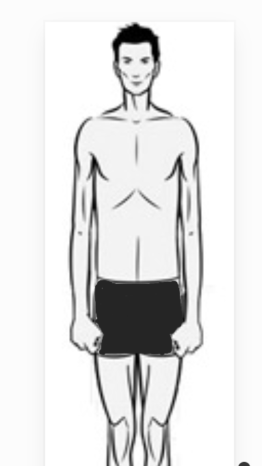

Ektomorf: "Sýska"olaerak tarif edilirler.Küçük eklemler,uzun ve yaðsýz kas liflerine sahiptirler.
Omuzlarý dar olmaya meyillidir.
Küçük ve narin kas yapýsý.
Yaðsýz kas kütlesi.
Zor kilo alan,hýzlýmetabolizmaya sahip.
Düz göðüsler ve dar omuzlar
Hýzlý olan matabolizmalarý ile kilo almakta oldukça zorlanýrlar.Yüksek kalori diyet ve büyük kas gruplarýný hedeflayen
düþük set,yüksek aðýrlýk içeren antrenman sistemlerini uygulamalýdýrlar.(Bileþik egzersizler Ektomorflar uykudaki kas yýkýmýný
önlemek yatmadan önce beslenmelidirler.
|